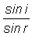
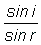
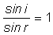
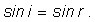
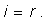

Provocarea 1
Provocarea 1
Care este oare "cea mai bună" valoare a raportului sinusurilor pe care o poţi avansa, pe baza valorilor din tabelul 2?
Un experiment de reflexie pe faţa plană a unui semicilindru de sticlă a condus la setul de date din tabelul 1.
Tabelul 1. Valorile functiilor sinus ale unghiurilor de incidenţă şi reflexie (rotunjite la primele două zecimale).
| sin i | sin r |
| 0,10 | 0,10 |
| 0,20 | 0,20 |
| 0,30 | 0,30 |
| 0,40 | 0,39 |
| 0,50 | 0,50 |
| 0,60 | 0,61 |
| 0,70 | 0,70 |
| 0,80 | 0,79 |
| 0,90 | 0,90 |
Probabil ai obţinut şi tu un set de date asemănător.
Poţi remarca uşor că, pentru valori mai mari ale lui sin i, corespund valori mai mari ale lui sin r.
În aceste condiţii, raportul  are şanse să fie constant.
Dacă ar fi aşa, am avea o regulă simplă, cu ajutorul căreia am putea afla valoarea lui sin r pentru oricare valoare a lui sin i!
Tabelul 2 prezintă valorile calculate ale acestui raport, rotunjite la primele două zecimale.
Tabelul 2. Raportul valorilor funcţiilor sinus ale unghiurilor de incidenţă şi reflexie (rotunjit la două zecimale).
| sin i | sin r |  |
| 0,10 | 0,10 | 1,00 |
| 0,20 | 0,20 | 1,00 |
| 0,30 | 0,30 | 1,00 |
| 0,40 | 0,39 | 1,03 |
| 0,50 | 0,50 | 1,00 |
| 0,60 | 0,61 | 0,98 |
| 0,70 | 0,70 | 1,00 |
| 0,80 | 0,79 | 1,01 |
| 0,90 | 0,90 | 1,00 |
Raportul sinusurilor este aproape constant, având o valoare apropiată de unitate. Abaterile sunt de doar 2...3 procente în plus sau în minus.
Provocarea 1
Care este oare "cea mai bună" valoare a raportului sinusurilor pe care o poţi avansa, pe baza valorilor din tabelul 2?
Când există variaţii ale unei mărimi, cea mai bună valoare pe care o putem avansa este media aritmetică a valorilor măsurate.
Prin mediere, abaterile în plus sau în minus tind să se compenseze.
În cazul valorilor din tabelul 2, media aritmetică a rapoartelor sinusurilor, rotunjită la primele două zecimale, este 1,00.
Astfel, avem deocamdată regula: raportul dintre sinusul unghiului de incidenţă şi sinusul unghiului de reflexie, rotunjit la primele două zecimale, este 1,00.
Provocarea 2
Care este regula generală pe care o respectă măsura unghiurilor de incidenţă şi de reflexie?
Deoarece am obţinut , rezultă că

Măsurile unghiurilor i şi r fiind cuprinse între 00 şi 900, avem

Pe baza datelor din tabelul 1, am obţinut că reflexia are loc astfel încât unghiul de incidenţă este congruent cu unghiul de reflexie, oricare ar fi unghiul de incidenţă!
 Activitatea experimentală 1
Activitatea experimentală 1
Prelucrează datele obţinute de tine în cazul reflexiei luminii pe semicilindrul de sticlă şi încearcă să găseşti regula pe care o respectă unghiurile de incidenţă şi de reflexie.